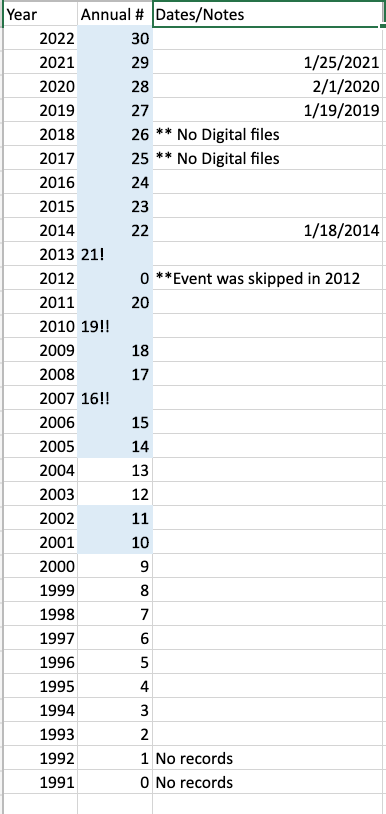
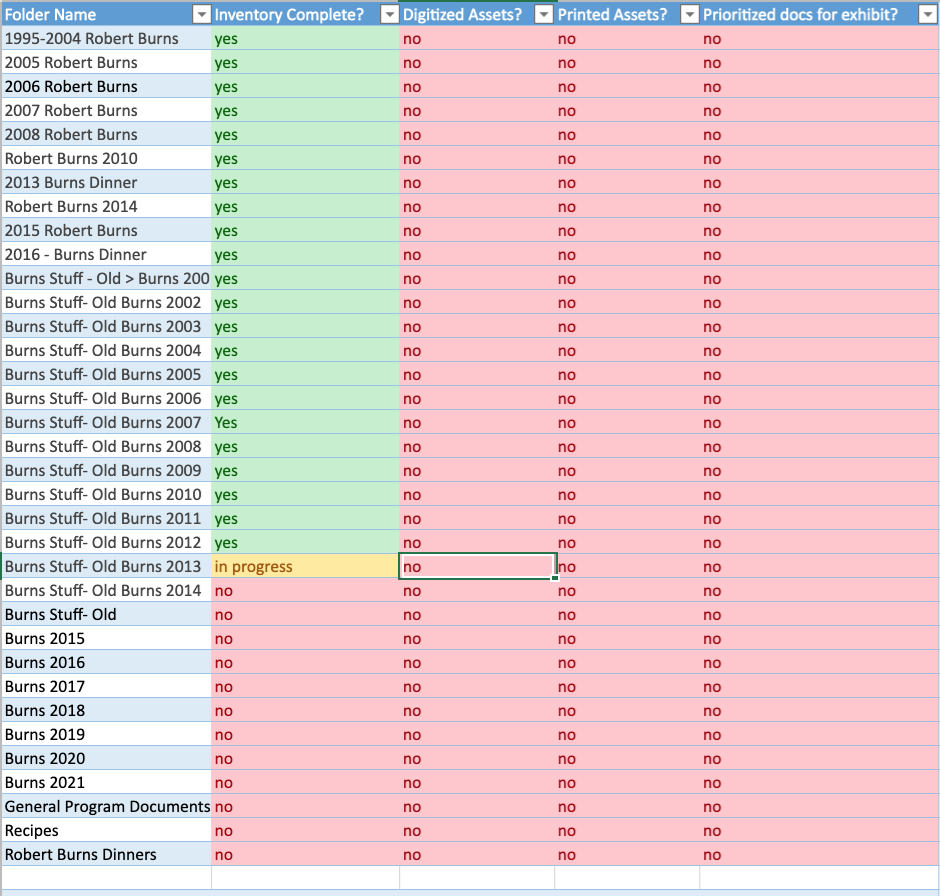
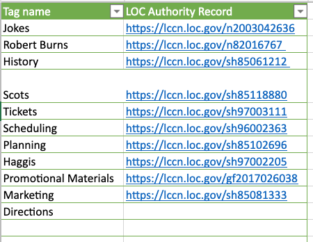
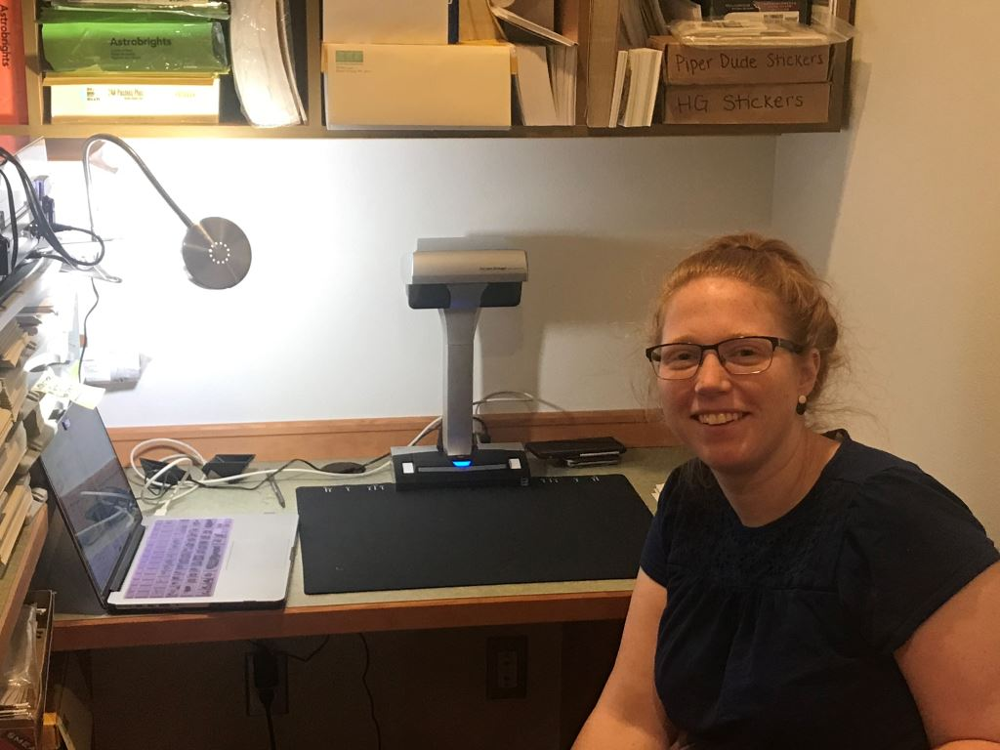
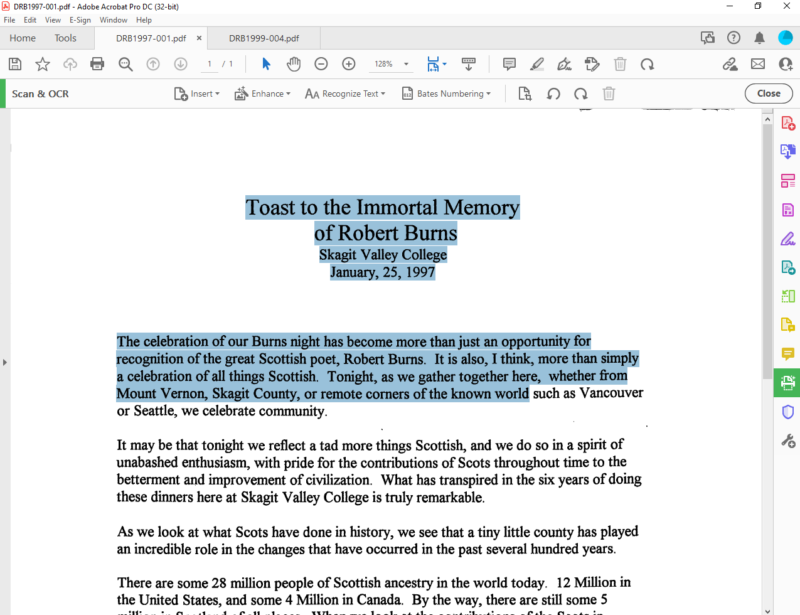
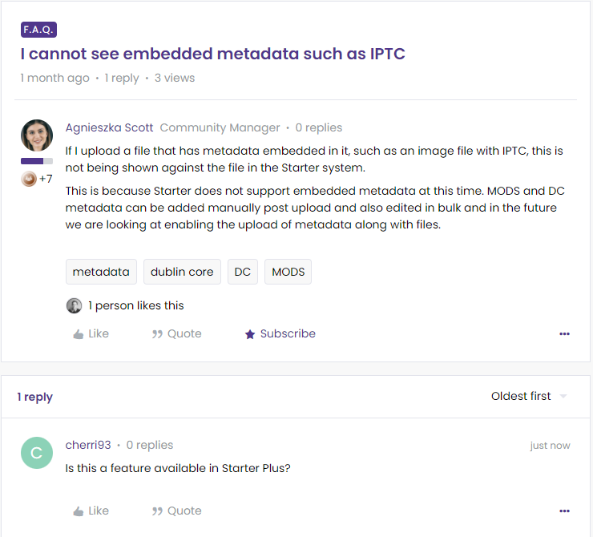
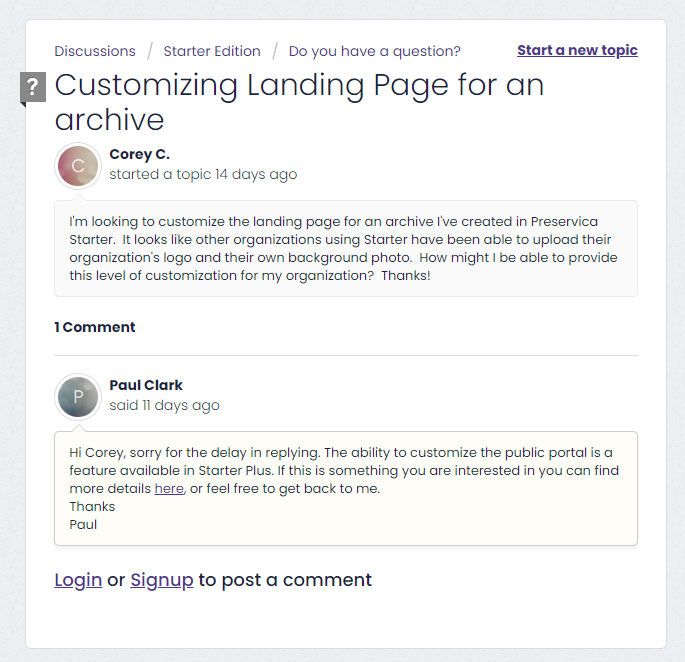

Corey Cherrington's work for the Celtic Arts Foundation
My Process
Especially at the planning and ideating phases of this project, I relied heavily on Excel Worksheets to help me organize the large amount of information that needed to be organized for the Robert Burns Collection. Below, I've included a few screenshots of my work in Excel, including a chart of the years in which the Robert Burns Dinner occurred (according to my research), the column names I started out with when I was figuring out the inventory spreadsheet format, a project manager I created to help me keep track of progress, and an early working list of some of the tags I thought might be useful for the assets.



When inventorying was completed, I started digitizing documents. This is a photo taken of me while sitting at my digitization station at CAF.

When I was digitizing all the physical documents, I had to also run the scanned documents through my Adobe PDF editor to ensure the text within them was searchable. This is called Optical Character Recognition (OCR). I was very happy to see how quick Adobe was at enabling OCR in each document, so I recorded a snapshot of this added capability below. If the document was not OCR capable, I would not have been able to highlight the text as seen in the screenshot.

Digitized and born-digital assets were uploaded to CAF's Preservica Starter web page. Preservica supports a large community and hosts a question-friendly environment. I took advantage of this resource by asking questions in the forum

